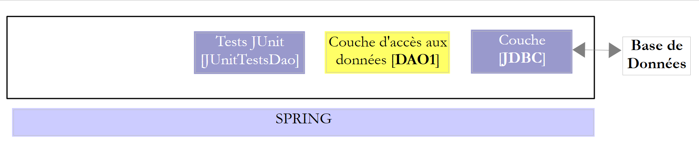
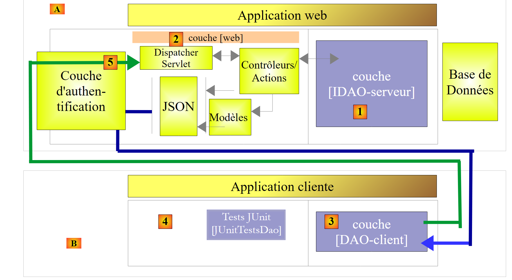
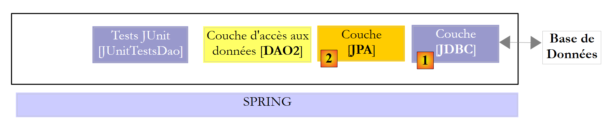
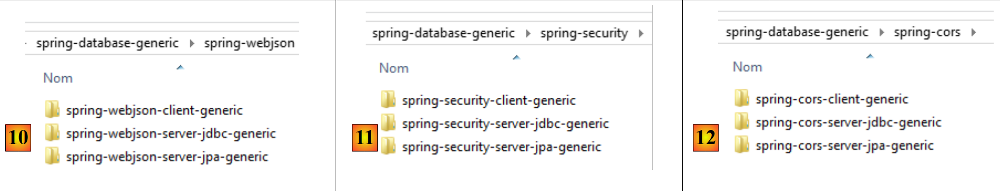

1. مقدمة
ملف PDF الخاص بهذا المستند متاح |HERE|.
الأمثلة الواردة في هذا المستند متاحة |HERE|.
1.1. المحتوى
نقترح في هذا المستند دراسة تكوينات مختلفة لتشغيل قاعدة البيانات. لنفترض وجود البنية الطبقية التالية:
 |
يتجه مسار التنفيذ من اليسار إلى اليمين:
- تُنفَّذ أولاً إحدى فئات الطبقة [ui] (واجهة الاستخدام). وستقوم هذه الطبقة بإنشاء مثيلات للطبقات [metier] و [dao]. وإذا كانت الطبقة [ui] عبارة عن واجهة رسومية، فإنها تنتظر بعد ذلك إجراءات المستخدم. وقد تؤدي إحدى إجراءات المستخدم إلى تنفيذ طرق في جميع طبقات البنية وصولاً إلى قاعدة البيانات. ويتم عرض نتيجة عمليات التنفيذ هذه للمستخدم بشكل أو بآخر؛
قد يكون دور الطبقات المختلفة كما يلي:
- الطبقة [JDBC] (Java DataBase Connectivity) هي واجهة وصول عالمية إلى قواعد البيانات. وهي تعرض دائمًا نفس الواجهة للطبقة [DAO]. إذا تم تغيير SGBD، يكفي تغيير برنامج التشغيل JDBC. ولا تتغير الطبقة [DAO] إذا تم الالتزام بعدد معين من القواعد. ومع ذلك، من الصعب ضمان قابلية النقل بنسبة 100% بين SGBD لأن هذه الطبقات غالبًا ما تحتوي على جزء كبير من SQL المملوك، والذي يصعب تجاهله لأنه غالبًا ما يؤدي إلى تحسين الأداء. بمجرد استخدام مكونات SQL الخاصة، تصبح قابلية النقل بين SGBD غير ممكنة. علاوة على ذلك، غالبًا ما تتبع مكونات SGBD سياسات مختلفة لتوليد المفاتيح الأولية تلقائيًا، وكلمات محجوزة تختلف من مكان لآخر. في هذا المستند، تمكنا مع ذلك من نقل بنية JDBC التي تمت دراستها إلى ستة أنظمة SGBD مختلفة، مع قبول وجود مشروع تكوين لكل منها؛
- توفر الطبقة [DAO] واجهة للوصول إلى بيانات قاعدة البيانات المحددة المستخدمة (ويجب تمييزها عن واجهة JDBC التي توفر طرقًا صالحة لجميع أنظمة SGBD)؛
- تقوم الطبقة [métier] بتنفيذ قواعد الإدارة أو قواعد العمل الخاصة بالتطبيق.
- وتتلقى كبيانات إدخال تلك الواردة من قاعدة البيانات عبر الطبقة [dao] و/أو تلك الواردة من المستخدم والتي ترسلها إليها الطبقة [ui]؛
- وتنتج بيانات يمكنها حفظها في قاعدة البيانات عبر الطبقة [dao] و/أو إرجاعها إلى الطبقة [ui] التي استعلمت عنها، لعرضها على المستخدم؛
- الطبقة [ui] هي الطبقة التي تنفذ إجراءات المستخدم وتُرجع إليه نتائجها؛
في المثال أعلاه، ترسل الطبقة [DAO] طلبات SQL إلى الطبقة [JDBC] لتنفيذها في الطبقة SGBD. منذ بضع سنوات (2006)، يمكن أن تتطور هذه البنية على النحو التالي:
 |
أصبحت الطبقة JPA (Java Persistence API) هي التي ترسل طلبات SQL إلى الطبقة JDBC وتتلقى النتائج منها. تقدم الطبقة [JPA] إلى الطبقة [DAO] عمليات لتخزين / تعديل / حذف / استرداد الكائنات. ولم تعد الطبقة [DAO] ترسل أوامر SQL. يتميز هذا النهج بقدر أكبر من قابلية النقل لأن تطبيقات JPA تتعامل مع الاختلافات بين SGBD، لكنه أبطأ من تقنية JDBC. وسنجري اختبارات الأداء لإثبات ذلك. تُضفي تقنية JPA الطابع الرسمي على العمل الذي أنجزه إطار عمل Hibernate [http://hibernate.org/] منذ سنوات.
سندرس طبقتين [DAO] باستخدام إحدى البنيتين التاليتين:
 |
 |
سيُطلب من الطبقتين [DAO1] و [DAO2] تنفيذ نفس الواجهة [IDAO]. كما أن الاختبار [JUnitTestsDao] سيكون هو نفسه بالنسبة للتكوينين، مما سيسمح لنا بمقارنة الأداء. سيتم تنفيذ الطبقة [DAO1] باستخدام Spring JDBC، والطبقة [DAO2] باستخدام Spring JPA؛
وبعد ذلك، سنعرض واجهة [IDAO] على الويب بالطريقة التالية:
 |
- في [1]، يتم عرض الطبقة [IDAO] على الويب من خلال طبقة ويب [2] التي تم تنفيذها بواسطة Spring MVC. إن واجهة [IDAO] هي بالفعل الواجهة المعروضة، وسنقوم بإنشاء نسختين من خدمة الويب اعتمادًا على ما إذا كانت هذه الواجهة مُنفَّذة باستخدام بنية [DAO-JDBC] أو [DAO-JPA-JDBC]؛
- في [B]، يستخدم عميل بعيد واجهات URL التي تعرضها خدمة الويب والتي تتيح الوصول إلى أساليب الطبقة [IDAO-serveur]. سنحرص على أن تقوم الطبقة [DAO-Client] [3] بتنفيذ واجهة [IDAO-serveur] [1]. وهذا سيسمح لنا باستخدام نفس الاختبار [JUnitTestsDao] الذي سبق استخدامه مرتين في [4]؛
- في [3]، سيتم تنفيذ الطبقة [DAO-client] باستخدام Spring RestTemplate؛
وبعد ذلك، سنقوم بتأمين الوصول إلى خدمة الويب:
 |
- في [5]، يمر طلب العميل HTTP عبر طبقة مصادقة تم تنفيذها باستخدام Spring Security؛
وبعد ذلك، سنقوم بتطوير البنية السابقة إلى البنية التالية:
 |
- في [3]، يكون تطبيق العميل نفسه تطبيقًا ويب. وسيعرض هذا التطبيق نموذجًا [5] يسمح بالاستعلام عن URL من خدمة الويب الآمنة. سيتم الوصول إلى الخدمة الويب الآمنة HTTP من خلال طبقة [DAO-client-js] مُنفَّذة بلغة جافا سكريبت. تُنفِّذ هذه البنية ما يُعرف باسم «الطلبات عبر المجالات»:
- تقدم خدمة الويب [2] طلبات URL بالصيغة [http://machine1:port1/]؛
- يتم تنزيل تطبيق الويب الخاص بالعميل [3] من URL و[http://machine2:port2/]. إذا لم يكن [http://machine2:port2/] مطابقًا لـ [http://machine1:port1/] (نفس الجهاز، نفس المنفذ)، فسيحظر متصفح العميل استدعاءات HTTP الواردة من الطبقة [DAO-client-js]. لحل هذه المشكلة، يجب أن تسمح خدمة الويب بالطلبات عبر النطاقات. سنرى كيف؛
تم اختبار المشاريع المعروضة باستخدام الإصدارات الستة التالية من SGBD:
- MySQL 5 Community Edition؛
- SQL Server 2014 Express؛
- PostgreSQL 9.4؛
- Oracle Express 11g الإصدار 2؛
- IBM DB2 Express-C 10.5؛
- Firebird 2.5.4؛
بالنسبة لكل من هذه الإصدارات SGBD، تم تطوير أربع طبقات مختلفة [DAO]:
- طبقة تم تنفيذها باستخدام Spring JDBC؛
- طبقة تم تنفيذها باستخدام Spring JPA ومزود Hibernate JPA؛
- طبقة تم تنفيذها باستخدام Spring JPA ومزود JPA EclipseLink؛
- طبقة مُنفَّذة باستخدام Spring JPA والمزود JPA OpenJPA؛
وبالتالي، يتم هنا عرض مجموعة مكونة من أربعة وعشرين تكوينًا مختلفًا. وقد بذلنا جهدًا كبيرًا في عملية التحليل:
- حيث تمت كتابة الجزء الأكبر من الكود مرة واحدة فقط. ويستند هذا إلى مشروعين من مشاريع Maven للتكوين:
- أحدهما يقوم بتكوين الطبقة JDBC؛
- والآخر يقوم بتكوين الطبقة JPA؛
 |
 |
يتكون مشروع Maven الخاص بتكوين الطبقة JDBC [1] لـ SGBD معين من نقطتين:
- استيراد أرشيف برنامج التشغيل JDBC؛
- تحديد معرّفات الوصول إلى قاعدة البيانات المستخدمة والأوامر المختلفة التي ستصدرها الطبقة [DAO1] إلى برنامج التشغيل JDBC. على الرغم من أن SQL معياري، فقد واجهنا مشاكل في قابلية النقل، ويرجع ذلك أساسًا إلى وجود أسماء جداول/أعمدة في الاستعلامات تبين أنها كلمات رئيسية محظورة في بعض SGBD (الجدول ROLES في DB2، والعمود PASSWORD في Firebird). من ناحية أخرى، على الرغم من أن اسم العمود عادةً ما يكون غير حساس لحالة الأحرف (كبيرة/صغيرة)، فقد واجهنا مشكلة مع PostgreSQL فيما يتعلق بالعمود ID الخاص بالمفتاح الأساسي للجداول. فقد أراد أن يُسمى id بأحرف صغيرة. وهذه أمثلة نموذجية لمشاكل قابلية النقل غير المتوقعة؛
تتألف مشاريع Maven الثلاثة الخاصة بتكوين الطبقة JPA و[2] لـ SGBD المحدد أيضًا من نقطتين:
- استيراد أرشيف التنفيذ JPA؛
- تكوين التنفيذ JPA المستخدم لـ SGBD المحدد المتصل. في الواقع، فإن الطبقة JPA هي التي ترسل الأوامر SQL إلى الطبقة JDBC. ولكي تكون فعالة، يجب أن تعرف SGBD حتى ترسل إليه الأوامر SQL التي سيتعرف عليها. ويمكن لهذه الأوامر استخدام SQL، وهو المالك لـ SGBD، بالإضافة إلى الخصائص المميزة لهذا الأخير (أنواع البيانات، التسلسلات، المشغلات، الإجراءات، التوليد التلقائي للمفاتيح الأولية، ...)؛
وبذلك يكون لدينا أربعة وعشرون مشروعًا (4 تكوينات × 6 SGBD) من تكوينات Maven التي ستستند إليها جميع المشاريع الأخرى المتعلقة بتشغيل قاعدة البيانات. في المخططات أعلاه، نظرًا لأن الطبقتين [DAO1] و [DAO2] توفران نفس الواجهة، فسيتم اختبار التكوينات الـ 24 للبنيتين المذكورتين أعلاه باستخدام فئة اختبار واحدة هي [JUnitTestsDao]. وبمجرد التحقق من صحة هاتين البنيتين، لن تكون هناك أي صعوبات:
- يعتمد مشروع Maven لنشر قاعدة البيانات على الويب على هاتين البنيتين. وبالتالي، هناك أيضًا 24 تكوينًا ممكنًا؛
- يعتمد مشروع Maven لتأمين الوصول إلى خدمة الويب على المشروع السابق، ولديه أيضًا 24 تكوينًا ممكنًا؛
- وأخيرًا، يعتمد مشروع Maven الذي يسمح بالاستعلامات عبر النطاقات إلى الخدمة الويب الآمنة على المشروع السابق، ويحتوي هو الآخر على 24 تكوينًا ممكنًا؛
أُجريت الدراسة باستخدام SGBD وMySQL5 وتنفيذ Hibernate JPA. ثم يتم النقل إلى تطبيقات JPA Eclipselink و OpenJPA. ثم يتم النقل إلى قواعد البيانات الأخرى (PostgresQL، Oracle، SQL Server، DB2، Firebird).
هذه الدورة مخصصة للمبتدئين. يتم شرح الجزء الأكبر من المفاهيم المستخدمة. ليس من الضروري معرفة برمجة قواعد البيانات أو برمجة الويب. في المقابل، يلزم وجود معرفة قوية بلغة SQL لأن استعلامات SQL المستخدمة لم يتم شرحها.
لفهم الأمثلة، يلزم معرفة أساسية بلغة Java، والتي يمكن العثور عليها في أي دورة تدريبية تمهيدية لهذه اللغة. يكفي الاطلاع على الفصلين الأولين من الوثيقة [مقدمة إلى لغة Java (1998)]. إنها وثيقة قديمة (صدرت عام 1998 ونُقحت عام 2002) لكنها تغطي الأساسيات. وللحصول على دورة تدريبية كاملة، يمكن قراءة الكتاب الضخم لجان-ماري دودو [http://www.jmdoudoux.fr/java].
هذا المستند ليس شاملاً بأي حال من الأحوال. إنه موجود فقط لتقديم منهجية وأكواد يمكن إعادة استخدامها في سياقات مشابهة. وقد كُتب المستند بطريقة تسمح بقراءته دون الحاجة إلى جهاز كمبيوتر. ولذلك، تم تضمين العديد من لقطات الشاشة.
على الرغم من أن هذا المستند لا يغطي جميع إمكانيات لغة جافا ولا جميع مجالات تطبيقها، إلا أنه يمكن استخدامه كوثيقة تعليمية لتعلم اللغة. إذا اتبع القارئ المبتدئ هذا المستند دون استكماله بالكامل، فسيصل إلى مستوى «جافا المتقدم» سواء في استخدام اللغة أو في استخدام إطار عمل Spring. وسيتمكن بعد ذلك من مواصلة تدريبه على جافا من خلال الكتب التالية:
- [مقدمة إلى Spring MVC و Thymeleaf من خلال الأمثلة (2015)] [http://tahe.developpez.com/java/springmvc-thymeleaf] الذي يواصل تعلم منظومة Spring من خلال عرض فرعها «برمجة الويب MVC»؛
- [مثال على عميل/خادم - AngularJS 1.x / Spring 4 (2014)] [http://tahe.developpez.com/angularjs-spring4] الذي يعرض بنية ويب من نوع العميل/الخادم، حيث يتم تنفيذ العميل باستخدام إطار العمل [AngularJS] والخادم باستخدام [Spring MVC]؛
- [مقدمة إلى Java EE باستخدام بيئة التطوير المتكاملة Netbeans وخادم التطبيقات Glassfish (2012)] الذي يتخلى عن بيئة Spring لصالح بنية ويب تستند إلى JSF (Java Server Faces) وEJB (Enterprise Java Bean)؛
- [مقدمة في برمجة أجهزة Android اللوحية باستخدام Android Studio (2016)] و [http://tahe.developpez.com/android/exemples-intellij-aa] اللذان يصفان بنية عميل/خادم، حيث يكون العميل جهازًا لوحيًّا يعمل بنظام Android والخادم خدمة ويب مُنفَّذة بواسطة Spring MVC؛
1.2. المصادر
لهذا المستند مصدران رئيسيان:
- [ref1] : من [مقدمة إلى Spring MVC و Thymeleaf من خلال الأمثلة (2015)] إلى URL و[http://tahe.developpez.com/java/springmvc-thymeleaf/]. يستند هذا المستند، باستخدام قاعدة بيانات أخرى، إلى العمل الذي تم إنجازه وعرضه في [ref1]. ببساطة، فإنه يخرجها من سياق برمجة الويب باستخدام Spring MVC. ولأنني وجدت أن الأكواد والمنهجية المستخدمة في [ref1] لعرض قاعدة بيانات على الويب قابلة لإعادة الاستخدام، فقد قررت أن أعد وثيقة منفصلة عنها؛
- [ref2] : [استمرارية Java 5 من خلال الممارسة (2007)] إلى URL [http://tahe.developpez.com/java/jpa]؛
لمزيد من التعمق في Spring، يمكن استخدام المراجع التالية:
- الوثيقة المرجعية لإطار عمل Spring [http://docs.spring.io/spring/docs/current/spring-framework-reference/pdf/spring-framework-reference.pdf]؛
- يمكن العثور على العديد من الدروس التعليمية حول Spring في URL و[http://spring.io/guides]؛
- موقع [developpez.com] المخصص لـ Spring [http://spring.developpez.com/]؛
- الدليل التعليمي [http://www.tutorialspoint.com/spring/spring_tutorial.pdf]؛
ويمكن للقارئ الذي لا يمتلك معرفة كافية بـ SQL اكتساب الأساسيات من خلال كتاب [[مقدمة إلى لغة SQL باستخدام نظام إدارة قواعد البيانات Firebird (2006)] المتوفر على الرابط URL [http://tahe.developpez.com/divers/sql-firebird/].
1.3. الأدوات المستخدمة
تم اختبار الأمثلة التالية في البيئة التالية:
- جهاز يعمل بنظام Windows 8.1 Pro 64 بت؛
- JDK 1.8 (الفقرة 23.1)؛
- IDE Spring Tool Suite 3.6.3 (الفقرة 1)؛
- متصفح Chrome (لم يتم استخدام متصفحات أخرى)؛
- ملحق Chrome [Advanced Rest Client] (الفقرة 1)؛
- SGBD MySQL 5.6 Community Edition (الفقرة 23.4)؛
- SGBD SQL Server 2014 Express (الفقرة 23.9)؛
- SGBD Postgresql 9.4 (الفقرة 23.7)؛
- SGBD Oracle Express 11g الإصدار 2 (الفقرة 23.6)؛
- SGBD IBM DB2 Express-C 10.5 (الفقرة 23.8)؛
- SGBD Firebird 2.5.4 (الفقرة 23.10)؛
- عملاء EMS Manager لستة من SGBD (الفقرة 23.5)؛
انتبه إلى JDK 1.8. تستخدم إحدى طرق دراسة الحالة طريقة من حزمة [java.lang] في Java 8.
معظم الأمثلة عبارة عن مشاريع Maven يمكن فتحها باستخدام أي من برامج IDE Eclipse أو IntellijIDEA أو NetBeans. وفيما يلي، تأتي لقطات الشاشة من IDE Spring Tool Suite، وهو إصدار من Eclipse.
1.4. الأمثلة
تتوفر الأمثلة على الرابط URL [http://tahe.developpez.com/java/spring-database] في شكل ملف zip قابل للتنزيل.
 |
- في [1]، مجلدات الأمثلة؛
- إلى [2]، ويحتوي المجلد [spring-core] على مشاريع التعلم الخاصة بـ Spring؛
- في [3]، يحتوي المجلد [spring-database-config] على مشاريع التكوين JDBC و JPA الخاصة بقواعد البيانات الست؛
 |
- في [4]، تكوين Oracle الخاص بـ SGBD. ويوجد فيه ثلاثة مجلدات:
- يحتوي [databases] على البرامج النصية SQL لإنشاء قاعدتي البيانات المستخدمتين في المستند؛
- يحتوي [jdbc-driver] على برنامج تشغيل Oracle JDBC بالإضافة إلى برنامج نصي لتثبيته في مستودع Maven المحلي؛
- يحتوي [eclipse] على [5]، وهي المشاريع الأربعة لتكوين Oracle:
- يقوم [oracle-config-jdbc] بتكوين طبقة الوصول JDBC إلى SGBD؛
- يقوم [oracle-config-jpa-hibernate] بتكوين طبقة الوصول JPA إلى SGBD باستخدام مزود Hibernate JPA؛
- يقوم [oracle-config-jpa-eclipselink] بتكوين طبقة الوصول JPA إلى SGBD باستخدام مزود الخدمة JPA Eclipselink؛
- [oracle-config-jpa-openjpa] تكوين طبقة الوصول JPA إلى SGBD باستخدام مزود JPA OpenJPA؛
- في [6]، يحتوي الملف [eclipse config / launch configurations] على إعدادات التشغيل التي يمكن للقارئ استيرادها إلى Eclipse ثم تكييفها مع بيئته الخاصة؛
 |
- في [7]، يحتوي المجلد [spring-database-generic] على كامل كود الوصول إلى SGBD المشترك بين المجلدات الستة SGBD والموردين الثلاثة JPA؛
- في [8]، يحتوي [spring-jdbc] على أربعة مشاريع تضم API وJDBC بالإضافة إلى Spring JDBC؛
- في [9]، يُعد [spring-jpa / spring-jpa-generic] هو المشروع الذي يستخدم طبقة JPA للوصول إلى قاعدة البيانات. المشاريع [generic-create-db*] هي مشاريع JPA التي تتيح إنشاء قواعد البيانات التي تستخدمها الطبقة JPA؛
 |
-
في [10]، يحتوي المجلد [spring-webjson] على المشاريع التي تعرض قاعدة البيانات على الويب؛
- [spring-webjson-server-jdbc-generic] هي خدمة الويب التي تعرض قاعدة البيانات التي يتم الوصول إليها باستخدام Spring JDBC؛
- [spring-webjson-server-jpa-generic] هي خدمة الويب التي تعرض قاعدة البيانات التي يتم الوصول إليها باستخدام Spring JPA؛
- [spring-webjson-client-generic] هو العميل الوحيد الذي يتيح الوصول إلى خدمتي الويب السابقتين؛
-
في [11]، يحتوي المجلد [spring-security] على المشاريع التي تعرض قاعدة البيانات على الويب مع وصول آمن؛
- [spring-security-server-jdbc-generic] هي الخدمة الويب الآمنة التي تعرض قاعدة البيانات التي يتم الوصول إليها عبر Spring JDBC؛
- [spring-security-server-jpa-generic] هي الخدمة الويب الآمنة التي تعرض قاعدة البيانات التي يتم الوصول إليها باستخدام Spring JPA؛
- [spring-security-client-generic] هو العميل الوحيد الذي يتيح الوصول إلى خدمتي الويب الآمنتين السابقتين؛
-
في [12]، يحتوي المجلد [spring-cors] على المشاريع التي تعرض قاعدة البيانات على الويب مع وصول آمن يسمح بالوصول عبر المجالات المختلفة، مثل الوصول من كود جافا سكريبت لمتصفح؛
- [spring-cors-server-jdbc-generic] هي خدمة الويب الآمنة التي تتيح الوصول عبر النطاقات وتعرض قاعدة البيانات التي يتم الوصول إليها باستخدام Spring JDBC؛
- [spring-cors-server-jpa-generic] هي الخدمة الويب الآمنة التي تتيح الوصول عبر النطاقات وتعرض قاعدة البيانات التي يتم الوصول إليها باستخدام Spring JPA؛
- [spring-cors-client-generic] هو تطبيق ويب يتيح الاستعلام عن خدمتي الويب السابقتين؛